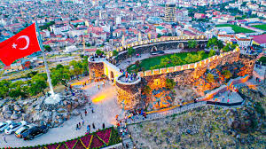
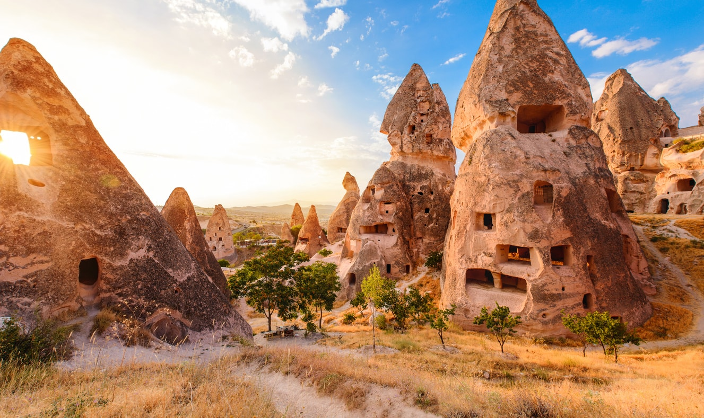
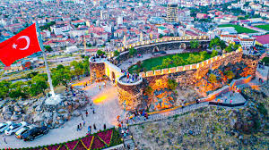
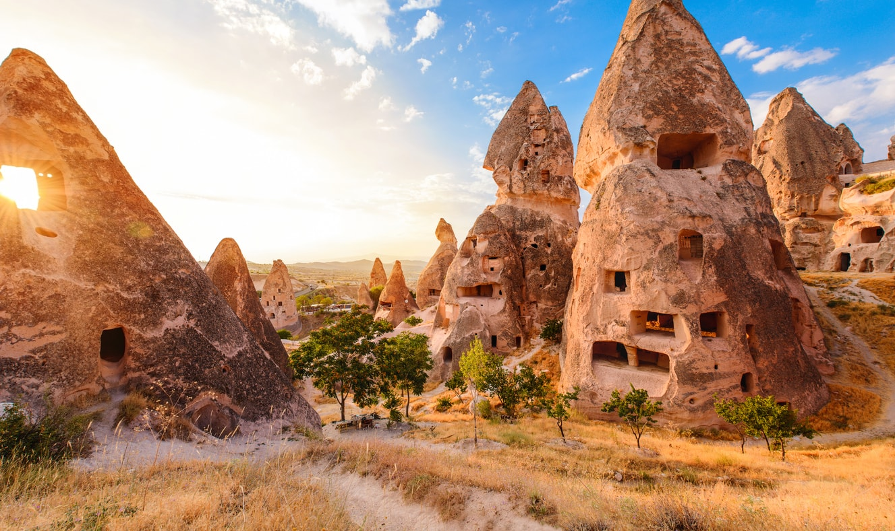

Nevşehir Hakkında
Nevşehir, Kapadokya bölgesiyle dünya çapında ünlüdür. Peri bacaları, yer altı şehirleri ve sıcak hava balonlarıyla tanınan bu bölge, eşsiz manzaralar ve tarihi zenginlikler sunar.
Nevşehir'de Ziyaret Edilmesi Gereken Başlıca Yerler:
- Göreme Açık Hava Müzesi: Kapadokya'nın en önemli turistik alanlarından biri olan bu müze, kaya oyma kiliseleri ve freskleriyle ünlüdür.
- Derinkuyu Yeraltı Şehri: Yer altına inşa edilmiş olan bu şehir, bölgedeki eski yerleşim yerlerinden biridir ve gizemli yapılarıyla ilgi çeker.
- Ürgüp: Peri Bacaları ve kaya evleriyle ünlü olan Ürgüp, Kapadokya'nın en bilinen yerleşim alanlarından biridir.